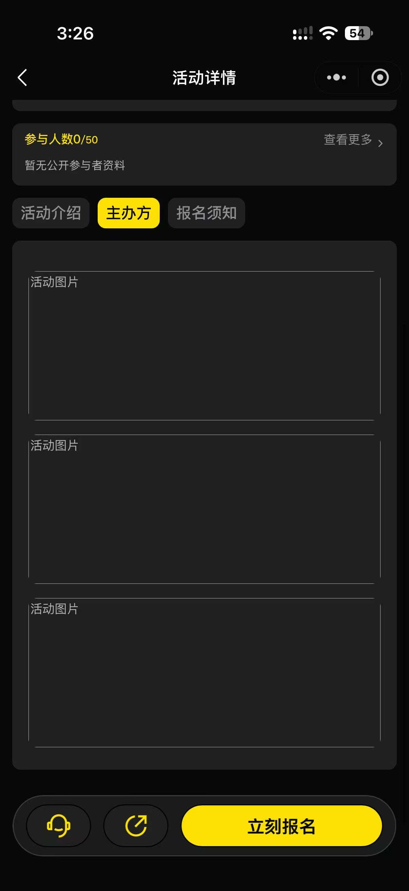
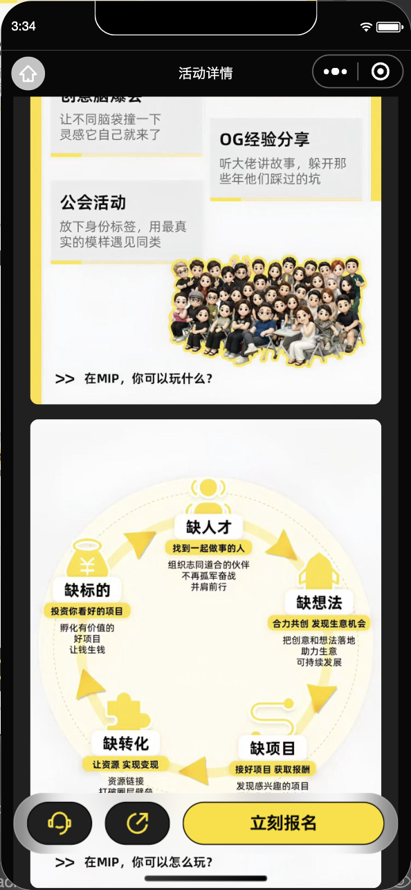
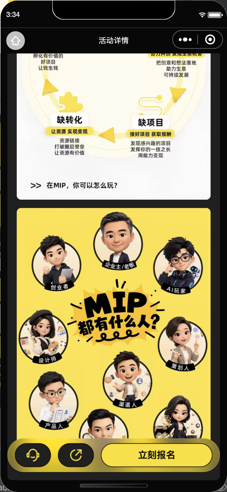
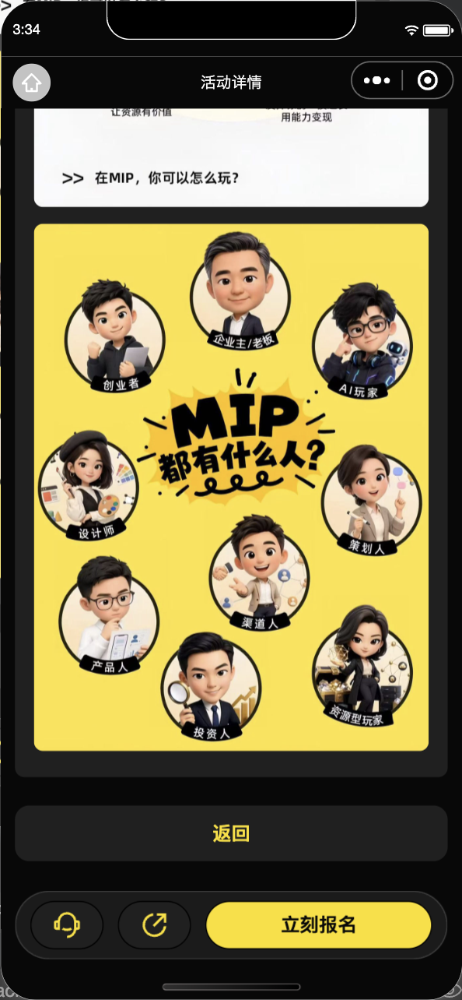
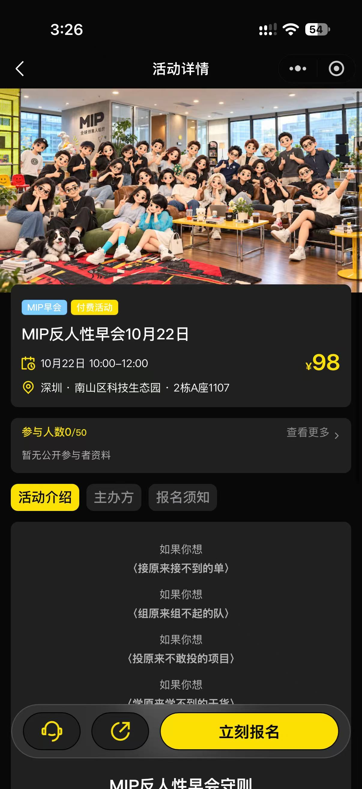

后台的主办方介绍确实有3张图片；活动介绍与报名须知本来没有插图。根因是iPhone富文本不能使用图片下载后的本地临时路径。已改为受控短时HTTPS地址，生产包1.0.3已上传，仍需在微信公众平台设为体验版；修复后iPhone真机待复核。
左：用户iPhone原图；中：生产数据在开发工具的真实富文本画面；右：组件约束。设备和滚动位置不同，不作像素对齐。


本次是内容加载兼容修复，无新增视觉原型。
微信rich-text官方说明：img标签仅支持网络图片。
此前SDK解码通过不足以证明富文本在真机显示；本次不沿用该结论。


生产3个富文本img均为HTTPS，无wxfile/http://tmp；3张1200×1600图片读取正常；标签离开再进入正常。
测试库：介绍3图、主办方1图、须知2图、报名页2图均通过。
完整verify:all：1825 / 330 / 253项通过。
脱敏验证记录

下一步：微信公众平台→版本管理→开发版本→1.0.3→设为体验版。新上传不会自动替换旧体验版。生产开发预览码通过聊天单独交付，不入库。